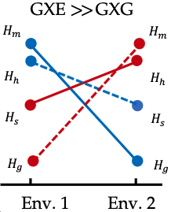

See also ORCID
| Xu K, Osmond MM. 2025. When does the probability of evolutionary rescue increase with the strength of selection? bioRxiv. 2024.07.19.604382v3. Accepted at The American Naturalist. doi |
|  | Carlson CI, Frederickson ME, Osmond MM. 2024. How genotype-by-environment interactions can maintain variation in mutualisms. bioRxiv. 2024.07.19.604331. Accepted at The American Naturalist. doi GitHub |
| *Deraje P, *Kitchens J, ^Coop G, ^Osmond MM. 2024. Inferring the geographic history of recombinant lineages using the full ancestral recombination graph. bioRxiv. 2024.04.10.588900. (*joint first authors, ^joint last authors) doi GitHub |
| Ackermann S, Osmond MM. 2024. The role of the unicellular bottleneck and organism size in mediating cooperation and conflict among cells at the onset of multicellularity. bioRxiv. 2023.07.17.549265. doi |
| Osmond MM, Coop, G. 2024. Estimating dispersal rates and locating genetic ancestors with genome-wide genealogies. eLife. 72177. doi bioRxiv GitHub software |
| Lyberger K, Osmond MM, Schreiber S. 2021. Is evolution in response to extreme events good for population persistence?. The American Naturalist. 198:44-52. doi bioRxiv |
| Klausmeier CA, Osmond MM, Kremer CT, Litchman E. 2020. Ecological limits to evolutionary rescue. Philosophical Transactions of the Royal Society B. 375:20190453. doi som: table of moving optima models |
| Henriques GJB, Osmond MM. 2020. During environmental change, cooperation can promote rescue or lead to evolutionary suicide. Evolution 74:1255-1273. doi bioRxiv |
| Osmond MM, Coop G. 2020. Genetic signatures of evolutionary rescue by a selective sweep. Genetics 215:813-829. doi bioRxiv slides talk |
|
|
Osmond MM, Otto SP, Martin G. 2020. Genetic paths to evolutionary rescue and the distribution of fitness effects along them. Genetics 214:493-510. doi bioRxiv GitHub poster |
| Thompson KA, Osmond MM, Schluter D. 2019. Parallel genetic evolution and speciation from standing variation. Evolution Letters 3:129-141. doi bioRxiv |
| Edwards KF, Kremer CT, Miller ET, Osmond MM, Litchman E, Klausmeier CA. 2018. Evolutionary stable communities: a framework for understanding the role of trait evolution in the maintenance of diversity. Ecology Letters 21:1853-1868. doi |

|
Scott MF*, Osmond MM*, Otto SP. 2018. Haploid selection, sex ratio bias, and transitions between sex-determining systems. PLoS Biology 16:e2005609. [* joint first authors] doi GitHub bioRxiv presentation "press" |

|
Osmond MM, Klausmeier CA. 2017. An evolutionary tipping point in a changing environment. Evolution 71:2930-2941. doi GitHub slides shiny-app |
| Osmond MM, Otto SP, Klausmeier CA. 2017. When predators help prey adapt and persist in a changing environment. The American Naturalist 190:83-98. doi GitHub presentation F1000Prime "press" |
| Osmond MM, Barbour MA, Bernhardt JR, Pennell MW, Sunday JM, O'Connor MI. 2017. Warming-induced changes to body size stabilize consumer-resource dynamics. The American Naturalist 189:718-725. doi GitHub |
| Toews DPL, Delmore KE, Osmond MM, Taylor PD, Irwin DE. 2017. Migratory orientation in a narrow avian hybrid zone. PeerJ 5:e3201. doi pdf |
| Osmond MM, Otto SP. 2015. Fitness-valley crossing with generalized parent-offspring transmission. Theoretical Population Biology 105:1-16. doi GitHub bioRxiv slides poster |
| Osmond MM, Reudink M, Marra P, Germain R, Nocera J, Boag P, Ratcliffe L. 2013. Relationships between carotenoid-based female plumage and age, reproduction, and mate colour in the American Redstart (Setophaga ruticilla). Canadian Journal of Zoology 91:589-595. doi pdf |

|
Osmond MM, de Mazancourt C. 2013. How competition affects evolutionary rescue. Philosophical Transactions of the Royal Society B 368:20120085. doi post-pre-print poster slides |
| Osmond MM. 2018. Adaptive challenges: fitness-valley crossing and evolutionary rescue. PhD thesis. pdf |
| Osmond MM. 2012. Eco-evolutionary rescue: an adaptive dynamic analysis. MSc thesis. pdf |
| Cragg J, Burger A, Osmond MM. 2011. Radar monitoring of Brachyramphus murrelets on Kodiak Island, 2010. Report to U.S. Geological Survey, Anchorage, Alaska. pdf |